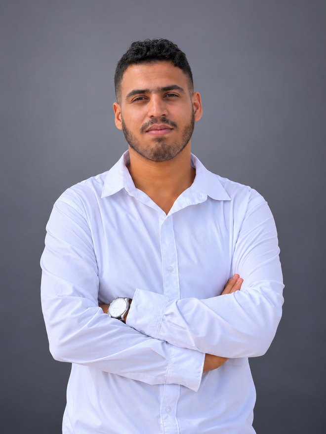

// 01
Objectif actuel
Stage de fin d'études (PFE) de 4 à 6 mois en automatisation, supervision industrielle ou IoT — pour contribuer à des projets industriels concrets et développer mes compétences terrain.
// Automatisme · IoT · systèmes intelligents
Étudiant en 5e année en Automatisme et Informatique Industrielle à l'EMSI Rabat, passionné par les systèmes automatisés, l'innovation technologique et les applications industrielles. Je conçois des systèmes de commande, de supervision et des plateformes IoT — du Siemens S7-1500 à l'ESP32.

// 01. À propos
Étudiant en 5e année d'école d'ingénieur en Automatisme et Informatique Industrielle à l'EMSI Rabat, je me spécialise dans la programmation d'automates, la supervision industrielle et les systèmes IoT embarqués.
Mes expériences chez LEONI, au sein du Groupe OCP et chez Optimum Process Maroc m'ont permis de travailler sur des projets industriels concrets : programmation d'un Siemens S7-1500 sous TIA Portal, supervision WinCC et Node-RED, analyse fonctionnelle et régulation de procédés, automatisation d'une centrale à béton.
Sérieux, curieux et motivé, je suis actuellement à la recherche d'un stage PFE de 4 à 6 mois pour mettre en pratique mes connaissances au sein d'un environnement technique stimulant.
Stage de fin d'études (PFE) de 4 à 6 mois en automatisation, supervision industrielle ou IoT — pour contribuer à des projets industriels concrets et développer mes compétences terrain.
Automatisation & PLC Siemens, supervision WinCC / Node-RED, systèmes embarqués ESP32 / Arduino, communication MQTT et régulation de procédés PI/PID.
Rigueur et sens des responsabilités, curiosité et apprentissage rapide, esprit d'analyse, autonomie, proactivité et esprit d'équipe.
Arabe, français et anglais. Centres d'intérêt : nouvelles technologies, automatisation & outils numériques, jeux vidéo et musique.
// 02. Expérience
Stage de fin d'année (PFA) — Automatisation & Supervision Industrielle
Bouznika, Maroc
Stage d'observation — Analyse fonctionnelle & régulation de procédé
Jorf Lasfar, Maroc
Stage de fin d'études (PFE) — Automatisation d'une centrale à béton
Casablanca, Maroc
Stage d'initiation — Maintenance & Instrumentation Industrielle
Casablanca, Maroc
// 03. Projets
Plateforme IoT distribuée pour la supervision et le contrôle automatisé de trois serres intelligentes : acquisition capteurs, traitement local, commande des actionneurs et supervision temps réel.
Système intelligent d'irrigation avec supervision IoT, modes de commande automatique et dimensionnement hydraulique & énergétique d'une serre.
Robot 4WD avec détection d'obstacles et contrôle Bluetooth, développé et validé sous Proteus ISIS.
Système de tri séquentiel automatisé basé sur des capteurs industriels : logique de commande et séquencement des opérations sur automate Festo.
// 04. Compétences
// 05. Formation
Diplôme d'Ingénieur d'État — Automatisme et Informatique Industrielle
École Marocaine des Sciences de l'Ingénieur. 5e année — systèmes automatisés, informatique industrielle, IoT et systèmes intelligents.
emsi.maLicence Professionnelle d'Université — Systèmes Automatisés et Contrôle Industriel
Faculté des Sciences et Techniques de Mohammedia.
fstm.ac.maDiplôme de Technicien Spécialisé — Électromécanique des Systèmes Automatisés
Institut Spécialisé Industriel de Mohammedia.
ofppt.ma// 06. Certifications
DeepLearning.AI · Coursera · 2026
Déploiement et cycle de vie des modèles de machine learning en production.
University at Buffalo · Coursera · 2026
Systèmes de puissance électrique : production, transport et distribution.
UC Irvine · Coursera · 2025
Fondamentaux de l'IoT et des systèmes embarqués.
University of Washington · Coursera · 2025
Fondements du machine learning à travers des études de cas.
Google · Coursera · 2024
Bases de la programmation Python et scripts d'automatisation : chaînes, listes, dictionnaires et objets.
University at Buffalo · Coursera
Usinage intelligent et fabrication avancée.
// 07. Contact
Une opportunité de stage PFE, un projet en automatisation ou en IoT, ou simplement envie d'échanger ? Écrivez-moi — je réponds rapidement.